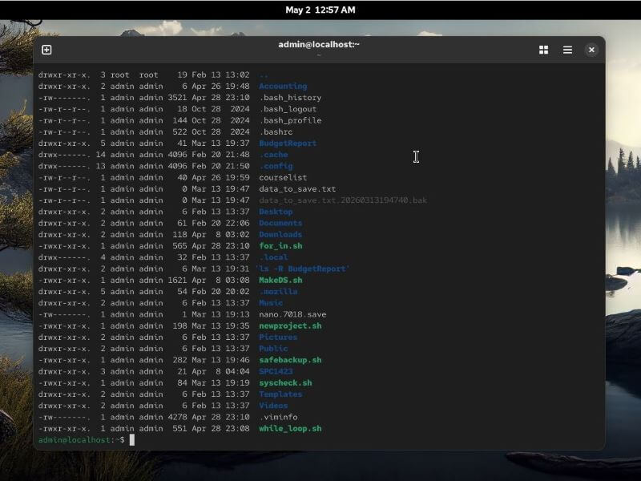
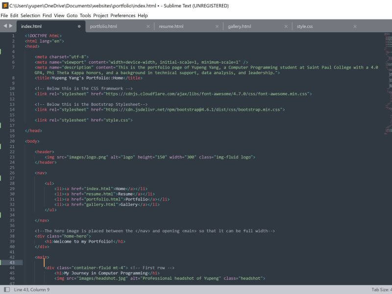
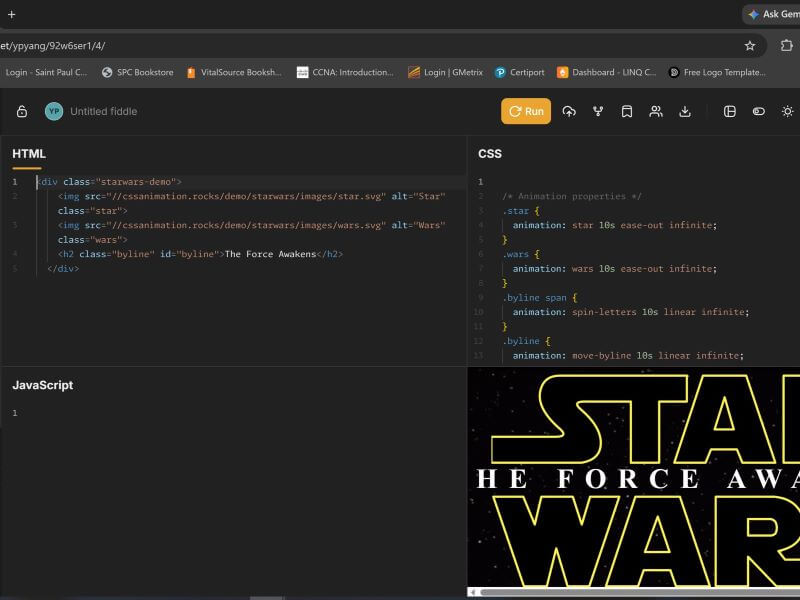
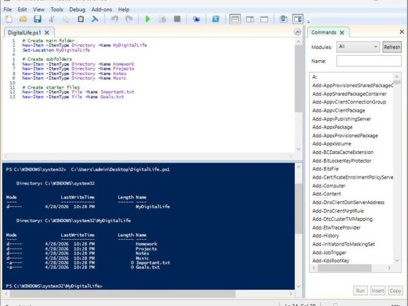
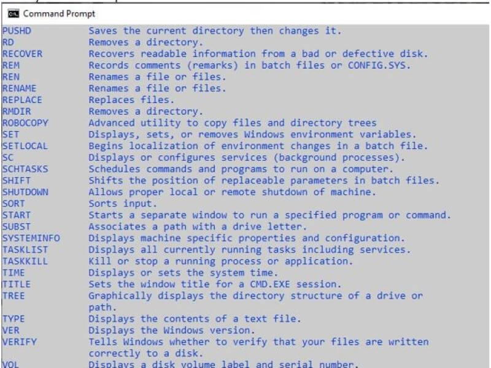
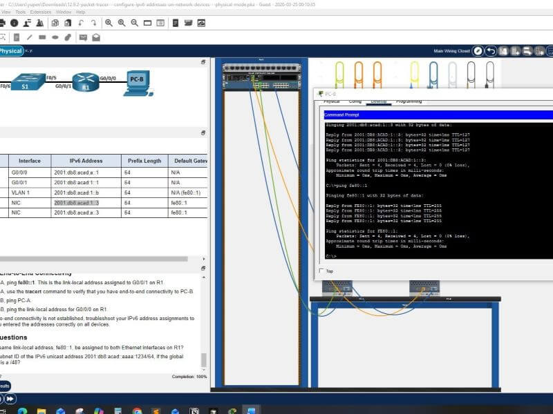
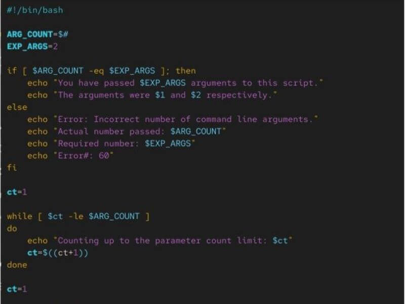

Visual Showcase
Explore a collection of images that reflect my creativity, attention to detail, and growing experience in web design. This gallery highlights visual elements and layouts that support clean, responsive, and engaging user experiences.
Phi Theta Kappa Honor Society
Being invited into Phi Theta Kappa Honor Society has been one of the proudest moments of my academic journey. As a Computer Programming student at Saint Paul College, earning this recognition required dedication, discipline, and a strong commitment to academic excellence while maintaining a 4.0 GPA.
Linux
Learning Linux commands and navigating the terminal environment has been an important part of my growth in computer programming and technical problem solving. Working through command-line exercises helped me become more comfortable with file management, scripting, and understanding how operating systems function behind the graphical interface.


Learning HTML & Web Design
Learning HTML and building webpages has quickly become one of my biggest passions in computer programming. Writing code has taught me the importance of patience, organization, and paying close attention to detail. Every line of HTML contributes to the structure and appearance of a webpage, and I enjoy seeing how small changes in code can completely transform the final design and user experience.




